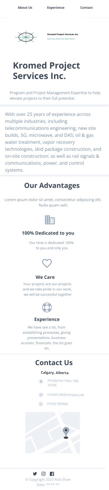

WDD131 Plan Document
Site Name
Name: Kromed Project Services Inc.
Reason for Selection: This name was chosen because this is my current company that I consult with. I currently do not have a website published for my company, so this is a great opportunity to move ahead with that.
Site Purpose
The main purpose of this website is to provide visibility of my company and the expertise in project management across varying industries.
Scenarios
Scenario 1: Does your company have experience with more than one project management methodology?
Scenario 2: What are the different types of projects your company has worked on?
Color Schema
Web Page Primary Colors
Primary Color: #5f1f04 (Dark Red) - This color will be used for heading and hyperlink text throughout the website.
Secondary Color: #2b0b61 (Dark Blue) - Will be used in the body text.
Typography
Primary Font: Roboto - Primary text font throughout the website.
Secondary Font: Arial, sans-serif - Will be used in paragraph fonts.
Wireframe
Mobile View Wireframe:
Desktop View Wireframe:
CSS
The CSS file submitted with this assignment contains the color schema that will be used for all aspects of the page including links, headers, footers etc.
Example:
- Buttons styled with the primary color and rounded corners.
- Heading fonts (Roboto) styled with larger sizes and bold weights.
- Backgrounds featuring secondary colors for section breaks.